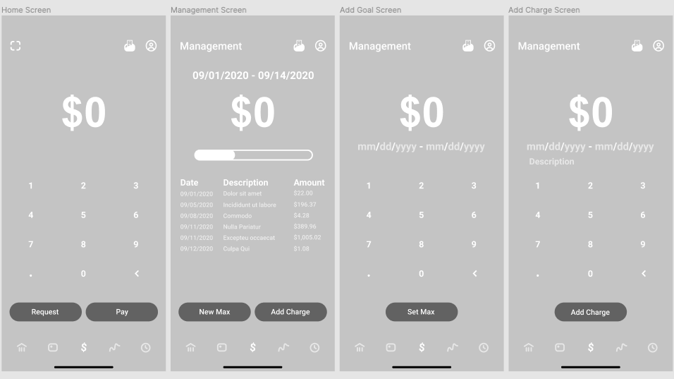
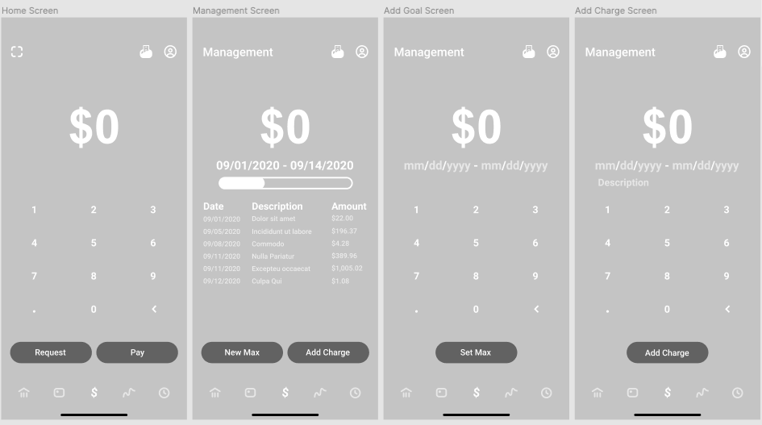
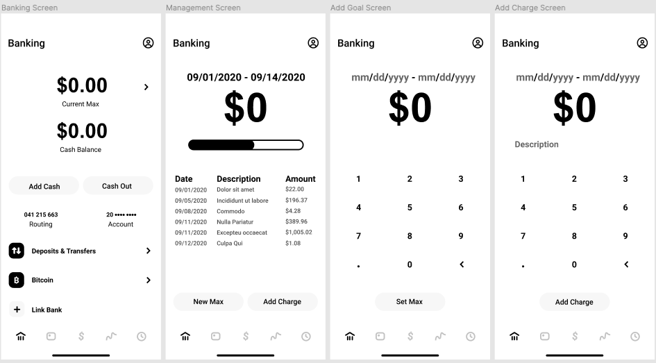
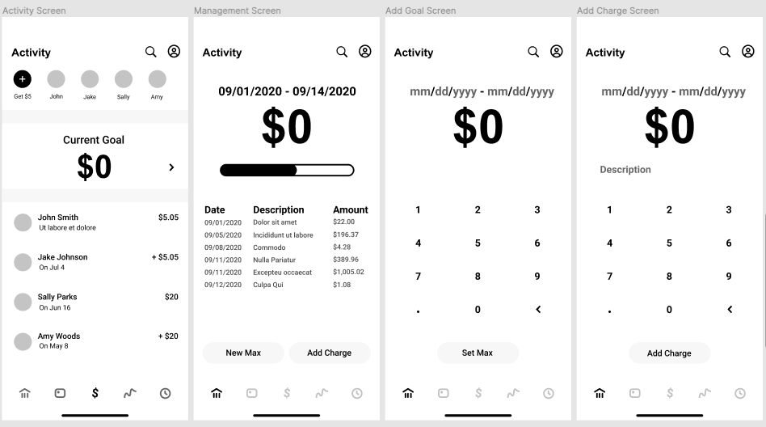
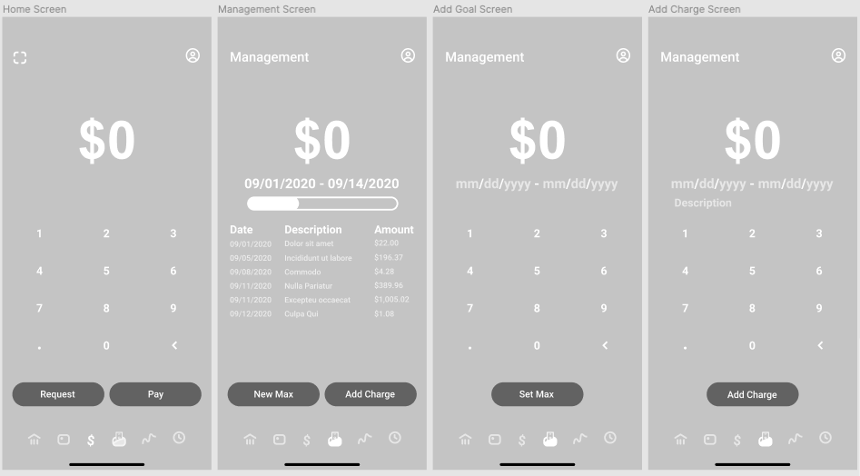
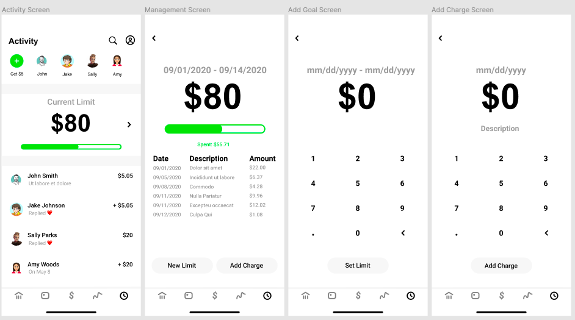

Cash App
Can users manage all of their spending in one place?
Overview
A feature that allows users to set spending limits and manage all of their finances in one space.
Roles
UI Designer
UX Designer
UX Researcher
Time Frame
June 2020 -
August 2020
Introduction
On a daily basis, millions of people use Cash App to complete online purchases, pay back friends, monitor stock investments, and etc. Despite the app’s highly favorable ease of use and accessibility, users tend to find themselves in a bind when attempting to track all of their recent expenses.
Cash app does not allow users to collectively track their purchases or take precautions to prevent themselves from overspending.
If users want to manage all of their expenses, they must use an outside source, such as a spreadsheet, to list their purchases. If others desire to set a financial limit, they must consciously remember their limit, or constantly calculate the sum of recent purchases to track the progress towards the limit.
User Research
To better understand the level of difficulty in managing finances and preventing overspending (based on the users’ personal financial goals), I interviewed multiple users, asking them to describe their experiences.
Trends found through the interviews include:
- Users primarily use the default page and the activity page.
- Users use out-of-app financial tracking methods.
- Users use the app to pay an individuals (not a business or entity).
- Users do not use cash app receipts as a method for tracking for spending, but for confirming a sent payment.
Insights found through the interviews include:
- Users want to access a monthly review of their transactions.
- Users view tracking expenses on multiple apps burdensome.
- Users want accountability or a remainder for heir spending goals.
- Users want to be warned of potentially overspending before they begin overspending.
- Users want to manage their finances in one place, preferably without having to input high amounts of data individually.
People Problem:
When users want to better manage their finances, they want to easily track their spending, but they cannot do that well because:
- It is difficult to keep track of expenses outside of cash app.
- I often spend more than my personal limit.
- I am not sure how close or far away I am from my personal financial goals.
Market Research
Other platforms are solving the problem of allowing users to track their spending:
- Mint: allows users to input transactions, link all of their banking accounts, shows users their monthly spending (and the categories their money was spent on)
- Zelle: has limits on how much users can send in a given month
- Venmo: sends users monthly summaries of their transactions
Brainstorming Session
Figuring Out Which Feature To Implement
After brainstorming, two opportunity areas were found:
- Tracking: How might we allow users to view their how much money they are spending?
- Rewards: How might we alert users when they are approaching their personal spending limit?

Enabling Users To Effectively Manage Their Finances
The chosen focus area is "Tracking - Goal Setting & Reminders."
Initial Approaches

Testing the Different Tactics
After weighing the pros, cons, and requirements of each of the three initial approaches, the chosen tactic is: “Limit (Goal) Setting.”
The goal of the feature is to enable users to input their expenses, allowing them to track transactions completed outside of Cash App, and track their spending with reference to personally set financial limits.
How It Solves The People Problem:
- Users can record all transactions completed both within and outside of the app and track their total amount of money spent within a selected date range.
- Users can set personal financial limits and see visual accountability when they are under, approaching or over their maximum goal.
- Users see their progress towards their chosen limit.
Determining the Entry Point
How might we maintain the layout of app while incorporating visual elemnts to allow users to track all of their expenses and have digital accountably for their financial habits to prevent overspending?
Five Entry Point flows explorations are as follows:
Entry Point One
Entry Point Two
Entry Point Three
Entry Point Four
Entry Point Five
Final Revision
After analyzing additional user interests and concerns, the final flow was determined. The interaction includes one entry point: through an arrow navigation icon on the activity tab. Users are able to see a color representation of their progress towards their financial limit. A green progress bar represents a user’s total expenses evaluating to less than 85% of their determined maximum. An orange progress bar represents expenses equalling between 85% and 99% of the limit. A red progress progress bar represents expenditures exceeding the limit.
After navigating through the arrow icon, the feature allows users to set a personal limit for a given date range, record their recent purchases within the chosen date range, and keep track of their spending through the automatically-generated-calculator aspect of the feature.
The following frames demonstrate varying states reflectng the users' progress towards his or her personal spending limit.
- Green progress bar: recorded spending is less than 85% of personal limit.
- Orange progress bar: recorded spending is between 85% - 99% of personal limit.
- Red progress bar: recorded spending reaches or exceeds personal limit.
Conclusion
Cash App is a successful financial app that has grown tremendously in popularity in recent years. However, the app lacks accountability for users desiring to limit their spending or better manage their finances. A “Limit and Tracking” feature will enable users to prevent instances of overspending, help users build stronger financial management skills, and encourage users to increase their usage of Cash App.